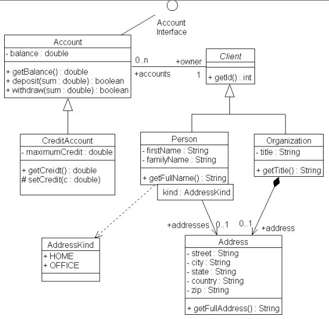

Задача №1: изучить тег "INPUT", составить пример с использованием этого тега, построить диаграмму классов
Ход работы:
Тег input является одним из разносторонних элементов формы и позволяет создавать разные элементы интерфейса и обеспечить взаимодействие с пользователем. Главным образом input предназначен для создания текстовых полей, различных кнопок, переключателей и флажков. Хотя элемент input не требуется помещать внутрь контейнера
Моя задача - изменить стиль выделяемого текса, добавить функцию вставки этого текста в другой параграф
Выделите текст в параграфе
Тег p определяет текстовый абзац. Тег является блочным элементом, всегда начинается с новой строки, абзацы текста идущие друг за другом разделяются между собой отбивкой. Величиной отбивки можно управлять с помощью стилей. Если закрывающего тега нет, считается, что конец абзаца совпадает с началом следующего блочного элемента.
Здесь отобразится выделенный текст
Диаграмма классов

Задача №2: создать wiki-страницу UML. Диаграмма развертывания